View test run result details
- Go to Reports > Test Runs > Test Runs.
- Navigate to the All Test Runs section and click a test run ID to go to the selected test run Summary.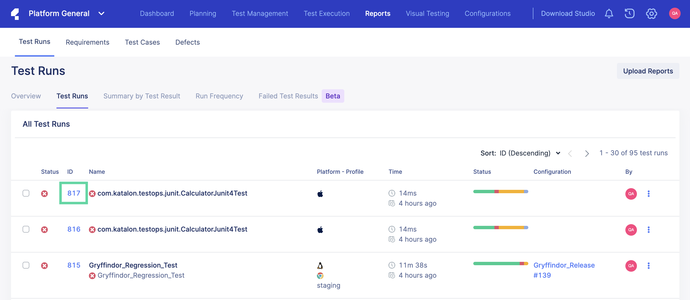
- Select Test Results and then the test run ID to view details of the test run results: 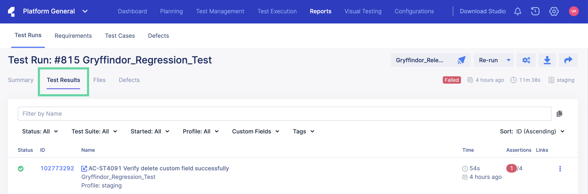
- The Result page displays detailed information about the test run. In the example below, the selected test run is deemed as Failed: 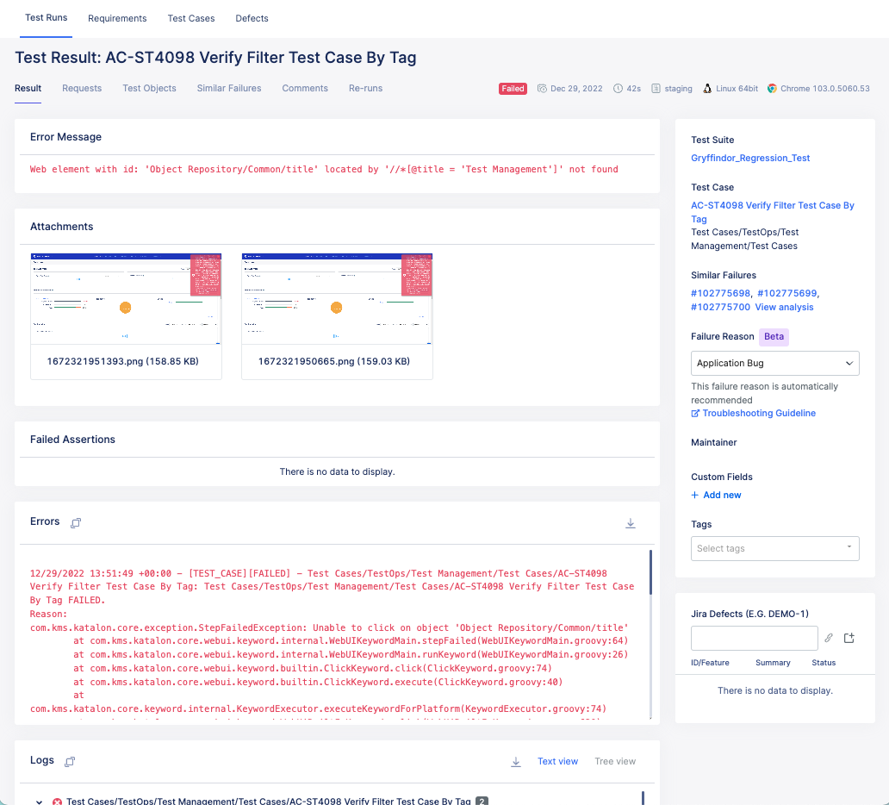The Result section provides the following contextual information on why your test run achieved a successful (or failed) result:
Error message: Specific reason why the execution fails.
Attachments: Captured screenshots and/or recorded videos to see what went wrong with failed tests.
Failed Assertions: When you run tests with Katalon Studio and if you have used built-in assertion keywords with the
verifyprefix (e.g,WebUI.verifyElementPresent) or custom assertion keywords such asKeywordUtil.markPassed(message),KeywordUtil.markFailed(message),KeywordUtil.markFailedAndStop(message), you can see the failed assertions in this section. To know more about assertion in Katalon Studio, see Assert Statements.Errors: The full error log. You may download this file.
Logs: The execution logs in each test step and the step status. This allows you to quickly troubleshoot which steps cause test failure. You may view this log in text view or tree view.
- Navigate to the right side to view more information about your test run result. 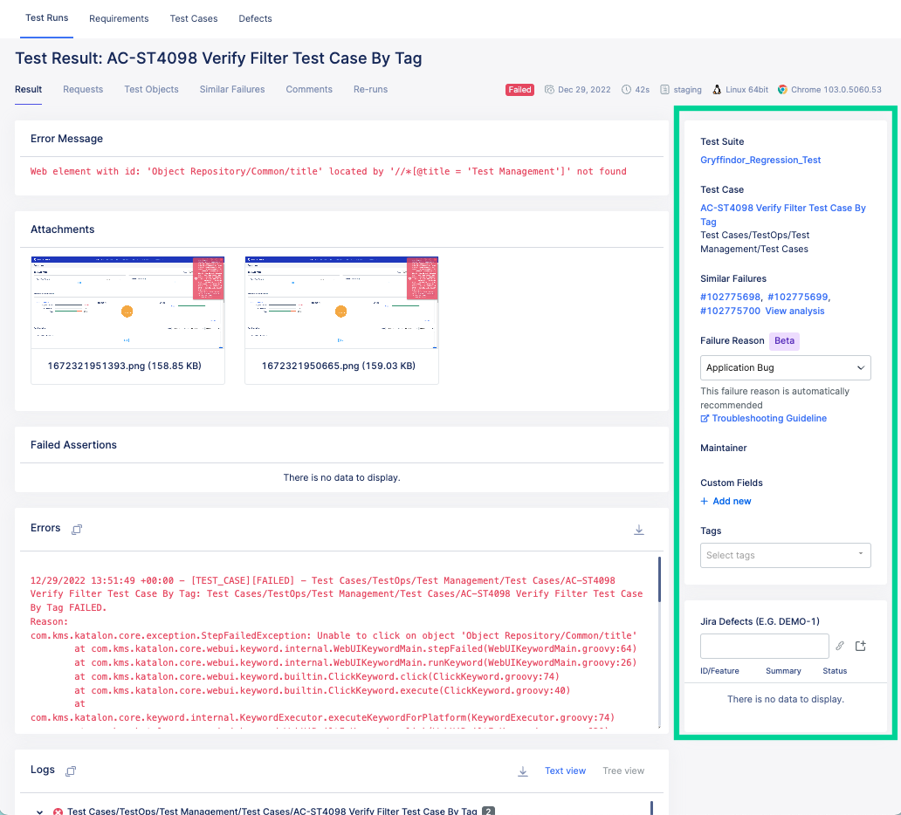This section provides a quick view of the following details in relation to your test run result: 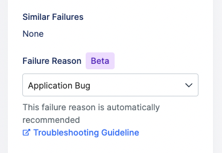
Test Suite, Test Case: The test suite and test case executed in the test run.
Similar Failures: TestOps analyzes all existing failed test results and identifies similar failed test suites or test cases. Those test runs with similar failures are listed in this section with their hyperlinked IDs.
- Failure Reason: TestOps automatically assigns failure reason to the corresponding top-level exception of failed test results. You may click on the drop-down and change the suggested reason to a different category. You may also click on Troubleshooting Guideline for more information on how to resolve your failed test suite and/or test case.Note:
- The Failure Reason capability is limited to the Premium and Ultimate plans of Katalon Platform. For more information, see Katalon Platform Plans.
Maintainer: The member user assigned as the executed test case's maintainer.
Jira Defects: You may link the related Jira defect or ticket for test management. For more information, refer to the following topic:Link test runs to Jira defects in Katalon TestOps.
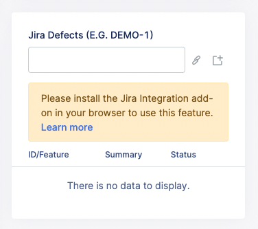
- Click the Requests tab to view the API requests received. 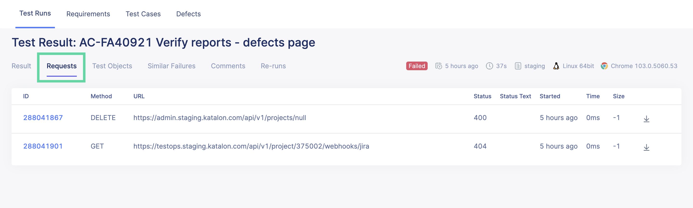Click the hyperlinked request ID to view more details of the API requests received.
- Click the Test Objects tab to view the test objects executed in the test run. 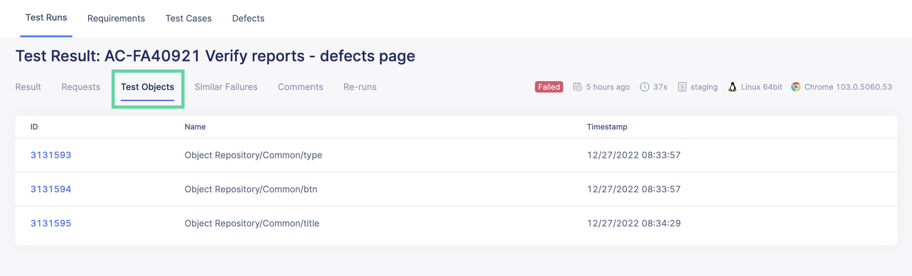Click the hyperlinked test object ID to view more details of the test objects executed in the test run.
- Click the Similar Failures tab to view other test run failures with similar errors. 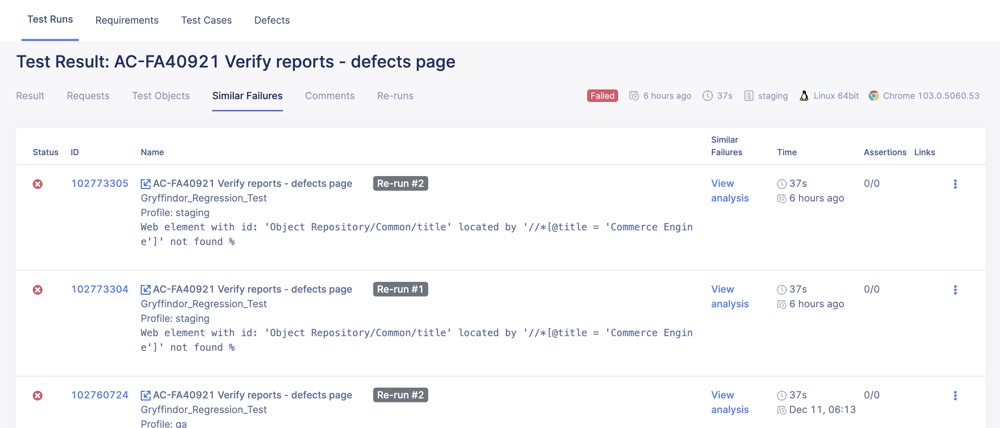You may click on a hyperlinked test failure ID to view more details.
- Click the Comments tab to view all comments for the test run. You may also type in and submit comments for collaboration. 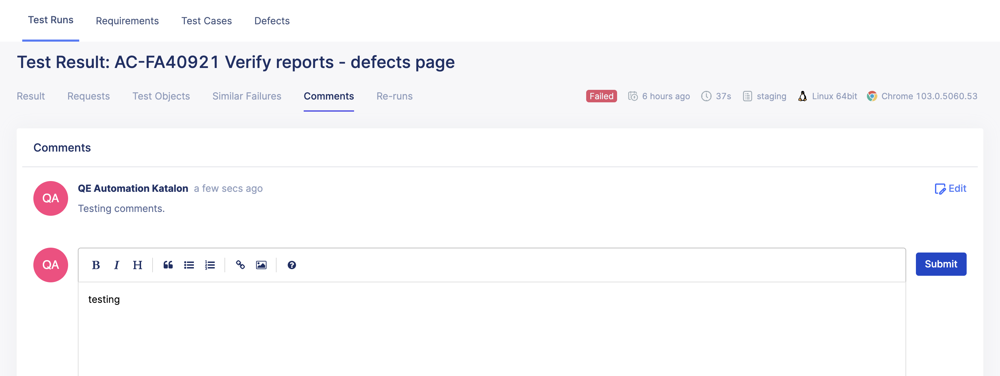
- Click the Re-runs tab to view the re-runs of the test run executed in list form. 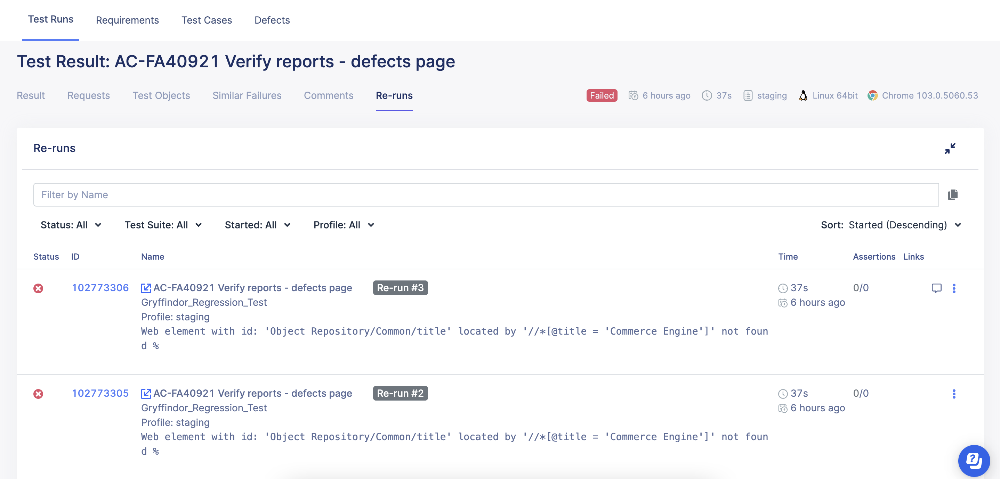You may also click the hyperlinked re-run execution ID to view more details.